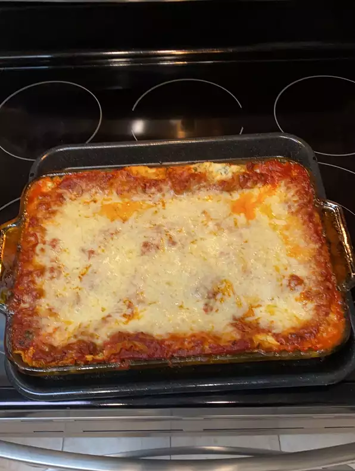

Lasagna Recipe

Description:
This is a lasagna recipe by John Chandler posted on AllRecipes and it's delicious.
>
As a fair warning, from John's recipe page (above): "It takes a little work, but it is worth it."
Recipe Notes:
- Prep: 30 mins
- Cook: 2 hrs 30 mins
- Additional: 15 mins
- Total: 3 hrs 15 mins
- Servings: 12
Ingredients:
- 1 lb sweet Italian sausage
- 3/4 lb lean ground beef
- 1/2 cup minced onion
- 2 cloves garlic, crushed
- 1 (28oz) can crushed tomatoes
- 2 (6oz) cans tomato paste
- 2 (6.5oz) cans tomato sauce
- 1/2 cup water
- 2 tbsp white sugar
- 1 1/2 tsp dried basil leaves
- 1/2 tsp fennel seeds
- 1 tsp Italian seasoning
- 1 1/2 tsp salt (divided)
- 1/4 tsp black pepper
- 4 tbsp chopped fresh parsley
- 12 lasagna noodles
- 16oz ricotta cheese
- 1 egg
- 3/4 lb mozarella cheese (sliced)
- 3/4 parmesan cheese (finely grated)
Steps:
- Step 1:
In a Dutch oven, brown the sausage, ground beef, onion, and garlic over medium heat. Once browned thoroughly, stir in crushed tomatoes, tomato paste, tomato sauce, and water. Season with sugar, basil, fennel seeds, Italian seasoning, 1 tsp salt, pepper, and 2 tbsp parsley. Simmer, covered, for about 1.5 hours, stirring occasionally.
- Step 2:
Bring a large pot of salted water to a boil. Cook lasagna noodles in boiling water for 8-10 minutes. Drain noodles, and rinse with cold water. In a mixing bowl, combine the ricotta cheese with egg, remaining parsley, and 1/2 tsp salt.
- Step 3:
Preheat oven to 375 degrees F (190 C).
- Step 4:
Assembly. Spread 1.5 cups of meat sauce evenly on the bottom of a 9x13 lasagna dish. Arrange 6 noodles lengthwise on top of the sauce. Spread with 1/2 the ricotta cheese mixture. Top with 1/3 of the mozarella cheese slices. Sppon 1.5 cups meat sauce over the mozzarella, and sprinkle with 1/4 cup parmesan cheese. Cover with foil (prevent sticking by greasing the foil, or make sure it doesn't touch the cheese).
- Step 5:
Bake in preheated oven for 25 minutes. Remove foil, and bake an additional 25 minutes. Cool AT LEAST 15 minutes before serving (ideally 1 hour).
Enjoy!